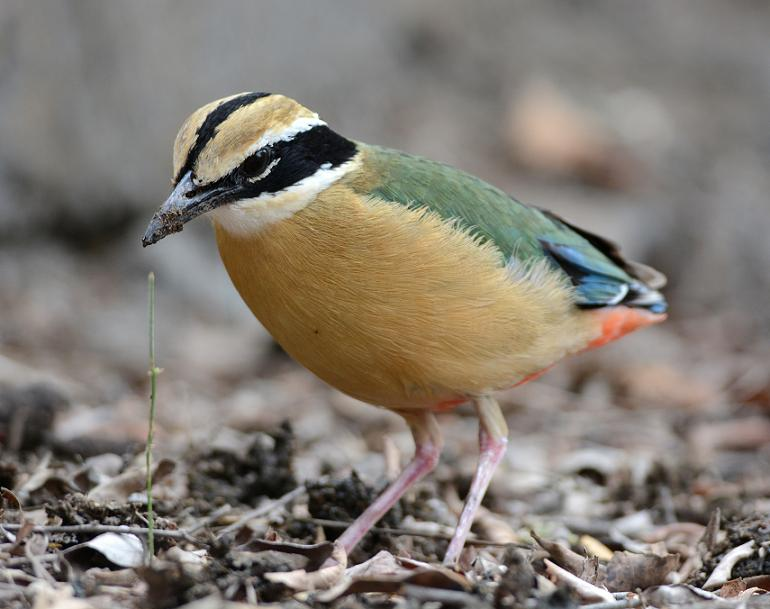

The green lush patch of Hingolgadh sanctuary stands in stark contrast with the arid zone of neighboring areas of Saurashtra. Dry, deciduous scrub forest along with undulating verdant hills create a ubiquitous manifestation of nature’s glory. During rains the savannah lush grasslands blend with the green of the scrubby forest and perks up with various forms of life. The Sanctuary spread over an area of 654 sq kms, was declared a sanctuary in 1980. In 1984 its ample of natural offerings recognized the place as an eco-educational center and is administrated by the Gujarat Ecological Education and Research (GEER) Foundation in Gandhinagar as the Hingolgadh Nature Education Sanctuary.

The tropical grassland ecosystem characterized by the spread of tall grasses amidst trees and shrubs is a unique hideout and dwelling for diverse range of animals and reptiles. Chinkara, Bluebull, Wolf, Jackal, Foxes, Indian Porcupine, Indian Hare, Hyena, Flying foxes and the likes add an animated fervor to this jungle. Almost 230 different kinds of birds render this area into their domicile over the year. Native birds like the vibrant Red-vented Bulbul, twittering Green bee-eater, Spotted Dove, Wood Pecker are commonly seen flying and nesting all over the region.
Things to do
Onset of monsoon till the beginning of winters is an ideal period to explore this unique terrain or attend the Nature Education Camps. This unique eco-education haven provides valuable opportunity for observing physical features such as the surging hill-slopes, patterns of soil characteristics, water-flow and the impact of these features on the food chain comprising of vegetation (grasses, herbs, shrubs and scrubby trees) and the animal world primarily supported by the vegetation.
Pre book the camping facility in the sanctuary to learn and discover the varied mysteries of nature. The nature education sanctuary is known for the nature camps extending for 3 days and 2 nights being held amidst the glorifying treasure of nature.
While the melodious singing of bulbul enchants you and the shy fox hidden behind a shrub attracts your attention, be cautious and aware of where you are standing and proximity with reptiles. This unique untamed garden of nature is also home to 19 species of snake and you being alert will make the trip a safe and memorable endeavor.
Being a responsible nature lover is our way of showing reverence to Mother Earth, a few tips for you to remember-